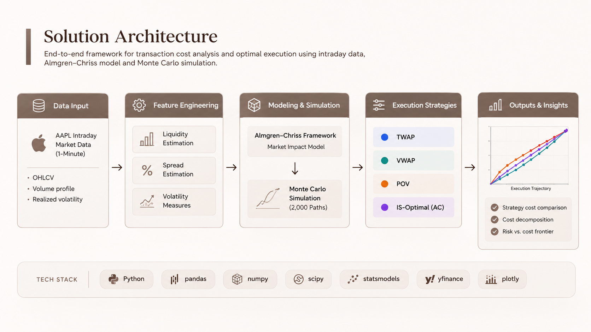

01
Execution Trajectory
How TWAP, VWAP, POV, and IS-Optimal complete the same parent order over the execution horizon.
A Python-based study of institutional execution costs, comparing trading strategies through market-impact modeling and Monte Carlo simulation.

Large institutional orders cannot always be executed at once without affecting the market. Trading too quickly can increase market impact, while trading too slowly leaves the order exposed to price movements.
The challenge is to choose an execution strategy that manages this trade-off while keeping transaction costs and execution risk under control.
Which execution strategy offers the best trade-off between transaction cost and execution risk for a large institutional order?
Large orders are usually executed over time rather than all at once. The analysis compares different ways of completing the order and measures the cost and risk that come with each approach.
Review how each strategy performs across execution cost, market impact, timing risk, and implementation shortfall.
Compare TWAP, VWAP, POV, and IS-Optimal before choosing how to execute the order.
AAPL intraday data is used to build the market inputs for the execution model, then four trading strategies are tested under the same order and market assumptions.
One-minute AAPL price and volume data is collected and cleaned before being used in the execution analysis.
Intraday volume, volatility, spread, and liquidity measures are estimated from the market data.
TWAP, VWAP, POV, and Almgren–Chriss IS-Optimal execution schedules are created for the same parent order.
Monte Carlo paths are used to test implementation shortfall and timing risk across the four strategies.
Execution cost, market impact, implementation shortfall, and timing risk are compared across the strategies.
The analysis compares execution paths, simulated shortfall, trading costs, and the cost-versus-risk trade-off across the four execution strategies.
How TWAP, VWAP, POV, and IS-Optimal complete the same parent order over the execution horizon.
Distribution of simulated implementation shortfall across the four execution strategies.
Spread, temporary impact, permanent impact, and timing risk across the four strategies.
Mean implementation shortfall compared with execution risk for each strategy.


Average cost was approximately 1.9 bps, giving IS-Optimal a small cost advantage over TWAP and VWAP.
Average cost increased to roughly 8.3 bps, with temporary market impact accounting for most of the increase.
POV reached roughly 51 bps of timing risk, well above the approximately 14–16 bps range of the other strategies.
It recorded the lowest mean implementation shortfall at about 3.6 bps while remaining within a comparable risk range to TWAP and VWAP.
Front-loaded, volume-based, and evenly distributed schedules produced different combinations of market impact, shortfall, and timing risk.
The comparison shows why execution decisions need to consider both trading cost and risk rather than optimizing either measure in isolation.
Extend the analysis beyond one-minute data to capture shorter-term changes in liquidity, spread, and market impact.
Use order book data to model available liquidity, queue depth, and how execution decisions interact with the market.
Add multi-venue execution and smart order routing to compare where and how an institutional order should be placed.
Include adverse selection and information leakage to test how larger orders may affect subsequent market behaviour.
Test reinforcement learning or other adaptive approaches that can adjust execution as market conditions change.
The project is designed to compare execution strategies under a controlled set of assumptions rather than reproduce a live trading environment.
The analysis uses one-minute AAPL data, which does not capture order book depth, individual trades, or sub-minute market activity.
Spread and market-impact costs are estimated using model assumptions rather than actual institutional order and fill data.
The Monte Carlo analysis does not include venue selection, queue position, partial fills, or changing order book conditions.